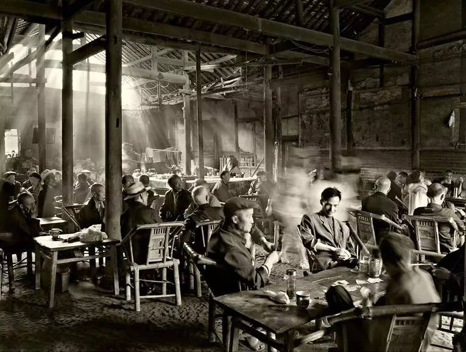

本文获新浪文化频道首页推荐。
小的时候，爷爷每天下午都会揣着一小包茶叶，到巷口的茶馆坐一下午，直至炊烟袅绕。除非天气恶劣或者有事，这样的生活规律一般不会打破。
我似乎是从来没有跟着去过的，虽然也曾有这样的想法，但一想到要在那儿傻傻地坐上整整一下午，还是打了退堂鼓，不如就呆在家里想干嘛干嘛。家里只有奶奶独自做着针线活儿，直到黄昏便去做饭，即便天气恶劣或者有事，这样的生活规律一般也不会打破。
我对那个年代的老茶馆还是有一些印象的，即使没有进去坐过，但毕竟是那个年代的常景，多少也见过一些。
老茶馆的店面、格局通常大同小异，宽敞的大堂摆放着一些八仙桌和长凳，数量多少由店面大小决定，尽可能地多，但又不能让客人觉得挤。通常的茶馆就是这样的布局，好一点儿的，在大堂的两边会安置几个稍稍讲究一点儿的雅座，但与现在这种包间式装修的雅间大不相同，那时的雅座不过是靠区域和心理作用界定的，坐在那个区域的的客人，就会让坐在大堂中间的客人觉得他们要尊贵些，他们有更重要更正经的事情要谈，因为他们坐在那个区域。
茶馆里的客人不是只为了喝茶，更多的是为了娱乐。有些人认为茶馆在那个年代，起到的是信息集散平台的作用。没错，喝茶的人在这里天南地北地聊着，真有点儿“有朋自远方来，不亦乐乎”的味道。但我觉得，他们总是以娱乐的心态来接收和发散这些信息，所以总的说来，这里还是只能算作娱乐场所。
以现在的话来说，稍稍有点儿规模的茶馆都懂得建设自己的商业生态圈。这些茶馆会有说书先生坐镇，先生可以帮茶馆增加用户粘度，同时也为自己挣口饭钱，实属双赢。但我的记忆里已经没有说书先生的声音了，因为对于只会在门口路过时张望一下的小屁孩儿来说，他们的声音实在太小，很容易淹没在嘈杂的背景音里。倒是川剧总是那样的喧嚣和亢奋，仿佛什么台词都是扯着嗓子喊出来的似的，即使你完全听不懂，只要回想一下，耳旁也依然能响起那特有的腔调和锣鼓声。以至于长大后到外地求学工作，仍然觉得各地风味的餐馆里，尤以川菜馆声音最大，高低贵贱无一不是如此。
那时候的茶馆，就是个小社会，三教九流，除上层外，各色人等，应有尽有，其乐融融。现在大概除了南方的乡镇，其它地方怕是再难见到了，奈何长大后我才对那样的老茶馆产生了向往的感觉。时光荏苒，这些“破旧”的事物已然退出了我们的生活，也许是过于市井，甚至连成为文物的资格都远不具备，更甭提文化遗产了——可那的确是我们文化的一部分啊！
前门西还有个老舍茶馆，保留着一丝古香古色，再说这天子脚下的东西，多少都流露出隐隐霸气，那文雅华丽的茶品对应的价格就让人完全找不到生活的味道。
为什么每一代人都很难从当今的时代里找到过去记忆的载体呢？这种来生难觅前世缘的生活方式是否蕴育出了现代人的浮躁与肤浅？